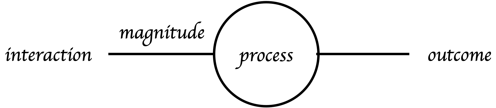
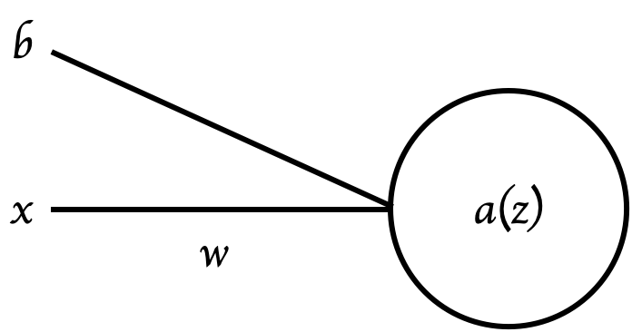

ricardoinacio - blog
To Teach a Neuron
26/03/2024
If we really think about it, every aspect of what we do in our daily lives produces an outcome; every little act and interaction, be it physical touch or a simple conversation, has an effect on something else. These interactions can be simplified and thought of as if they were functions, receiving our contributions as input, being weighed by how much of an impact they have, and producing the outcomes as output. Actually, the spectrum of things we can think of as functions is almost unlimited. That's why having a model that has the possibility of representing (or at least approximating) them would be invaluable to solving the challenging problems we face on a regular basis.
That is where neural networks enter the picture, since that's exactly what they do! If you can design a NN that is sufficiently complex, any desired function could be hypothetically mathematically approximated. To understand how these mechanisms actually work, let's push the complexity back a bit and focus on a smaller scale, the unit: the neuron.

These simply take an input x, which gets weighted by the connection's strength,
w⋅x,
and a
bias (b) is added to help represent slightly more complex issues (e.g., when the desired function
does not cross
the
origin), adding a bit of flexibility to the network, so that it can learn better. Lastly,
this weighted and likely biased input, z = wx+b passes through an activation
function, where, given
that the value is
higher than a certain threshold, a(z) > threshold, the result can be sent forward, as it's
considered relevant. Real networks are made by multiple layers of these neurons, each with multiple neurons.
Every one receives as input the outputs from all neurons from the previous layers, again weighted by their
connections. To keep complexity low, let´s image we only have one neuron per layer in our NN. Possible and
common activation functions (that decide if values should keep propagating forward) are the Sigmoid (), the Hyperbolic Tangent (), or the Rectified Linear Unit ().
Every single neuron that contributes to these complex systems, simply executes this basic procedure: take the input and produce an output. This way, in order to approximate any desired function, we can only change two values: the weights and biases. Initially, no network will be able to figure out what these two variables are supposed to look like, so we need to start them off with arbitrary values and change them iteratively until they are close enough to the “real” ones. That is what is meant by learning a function: finding the sweet spot of the weights and biases. To reach that spot, we need to test them and see how close or far from reality they actually are (maybe a metric would help to evaluate the situation). Let's use the Mean Squared Error (it's simple enough to be easily understood):
Where N is the number of examples we have to train the network, ŷ is the predicted
output our network
gives, and y
is the actual value the function we are trying to approximate would output (for every single example). Now that
we have a metric to measure
how far
we still are, we can use it to define the Cost function. This function uses the chosen error
metric, and by
looking at
it with respect to different parameters (as you may have guessed it already, the weight and the
bias) tries to
find
the values that minimize the error (or cost), indicating a closer approximation to the "real" function. In this
instance, the squared difference between the value of our
function
outputs,
ŷ, and the real value y will be used.
To formalize this, we use gradients, which give
us a vector
representative of
how much the cost function changes with respect to a specific parameter (in other words, how sensitive it is to
them).
In this case, to get the gradient for the weight and bias parameters, we use
and
respectively.
The question now is, how do we get these gradients? We have come a long way (in terms of steps) since we
introduced the
function's variable parameters w and b, until we reached the final outcome of the
prediction ŷ. So, to
compute this vector, we
will use the
chain rule.
There are a lot of different (and probably better) ways to explain it, but think of it as a chain of connections
between
directly adjacent values in the calculation of our approximated function's output, where in each step we
consider how each component affects the final outcome. In other words, a chain of specific parameters
influences, at each needed step for the final outcome. Let's recall the steps: We
take an
input x, multiply it by the connection's weight,
w, and add the bias, b: wx+b. To keep it simple,
let's call
this weighted (and potentially biased) input z. Then, we take this value and pass it through the
activation
function
a(z), and it becomes our predicted resulting value ŷ (imagining this is the last
layer, where this is the final prediction, since in reality, multiple hidden layers would have been introduced
and passed through until this step).
To finish, we just have to
compute the error according
to the
chosen metric, regarding the actual value y:
.
Now that we have this pipeline constructed, we must simply start at the end (on the Cost), and
reach the start
z =
wx+b, to obtain the sought-after parameters (w and b). To get to
w, we use the chain rule, starting from
the
Cost, and going to the prediction (the last neuron's activation function output,
ŷ = a(z)).
Then, from the
predicted
output ŷ, to the activation function's input, z. And then, finally, we reach the
desired variable w, from the direct computation of z. In
each of
these chain steps, when I say get from J to i, what I formally mean is to get the derivative of J
with respect
to i,
formally, . So, to get what we are seeking, we must simply do
for the weight, and
for the bias.
Remember, this is only for a single neuron per layer, so in a common network's environment, we need to aggregate the gradients of all neurons (available examples) in some way (e.g. averaging them).
To make the neuron learn (at each step, slightly better) weight and bias values, we update them, considering the
gradient of our cost function, which will decide the size and direction of the step to take. We should also pay
attention to a
special
value called the learning rate (α). This small number is what we call a hyperparameter, which
influences how rapidly
the
network adapts. To update each, respectively, we use:
and
All things considered, let's just say that normally we would take big steps in the beginning and smaller steps
as we
reach lower Cost (aka Loss) function values, optimizing the parameters of our network, through a method known as
Gradient Descent.
This particular subject could be the sole topic of another post, so for the sake of brevity, let's
simplify (a gross amount) this matter.
As mentioned before, it's expected that early on the Cost value is significant; that's why the
gradient of
the function, regarding the parameter (weight or bias), will be quite substantial (negative or positive, with
the sign
simply indicating the direction of the step).
Then, we must update the values of said parameters, considering the learning rate (α), and use them
on the
next iterations to be once again updated if needed. The main idea is that by forcing a network to change these
values, we can directly tell it how to individually change the connections between neurons, and how much
each output should influence the outcome (reduce or increase).
As it's observable in the example, as the Cost function is
minimized, the gradients also
become smaller (think of it as the inclination of the loss), until it reaches the
point when the updates (steps) are no longer significant.
That is
when we
stop, since we've reach the optimal (local or global) parameter value! Since most real problems won't be
represented by a simple convex function, the global minima can't be guaranteed, thus the need for
variations on this algorithm, to find the parameter values more effectively, such as
Stochastic Gradient Descent (SGD) or
Mini-Batch Gradient Descent.
By doing this, paired with a careful design and architecture of our network, we can reach a point where the parameters we were seeking (weights and biases), allow us to very accurately deduce any parameterized function we intend to, and consequently, solve fairly complex problems.